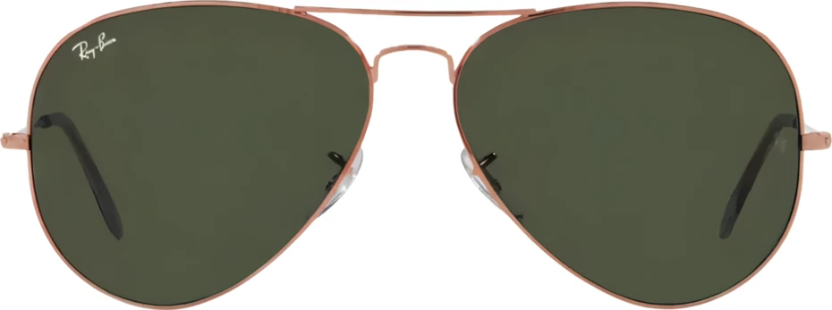

Aviator · 3025
UNA GUÍA PARA ELEGIR
Tu rostro. Tu estilo.
Descubrí qué modelos van con vos.
Ver mi tipo de rostro
Elegí la forma de tu rostro
Podés seleccionarla abajo o ayudarte con una selfie.
CON CÁMARA O SELFIE
Descubrí tu forma
De frente, sin anteojos, con expresión neutra y buena luz. Despejá el contorno de tu cara.
La foto se analiza en tu dispositivo: no se envía ni se guarda. La cámara se activa solo si das permiso.
ESTIMACIÓN ORIENTATIVA
La perspectiva, el pelo y la expresión pueden cambiar el resultado. Confirmá la forma que más se parece a vos o elegila manualmente abajo.
SELECCIONADOS PARA VOS
Una orientación de estilo, no una regla: elegí lo que te haga sentir bien. El talle y el ajuste también importan. Guía de formas Ray-Ban.
ENCONTRÁ TU RAY-BAN
La colección.
Tocá una gafa para consultar por WhatsApp. Disponibilidad según catálogo 15/09, sujeta a confirmación.